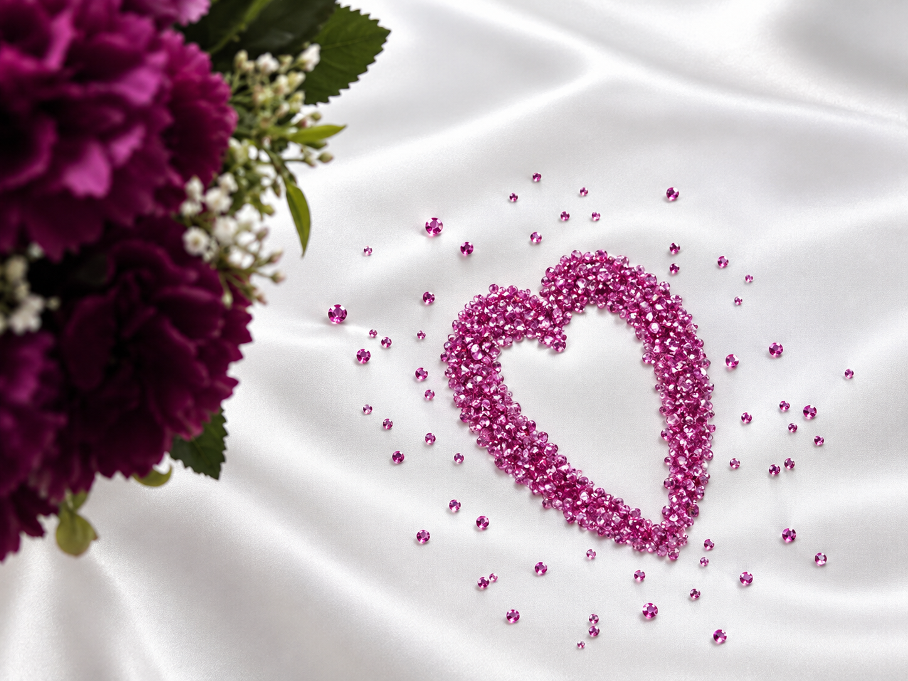
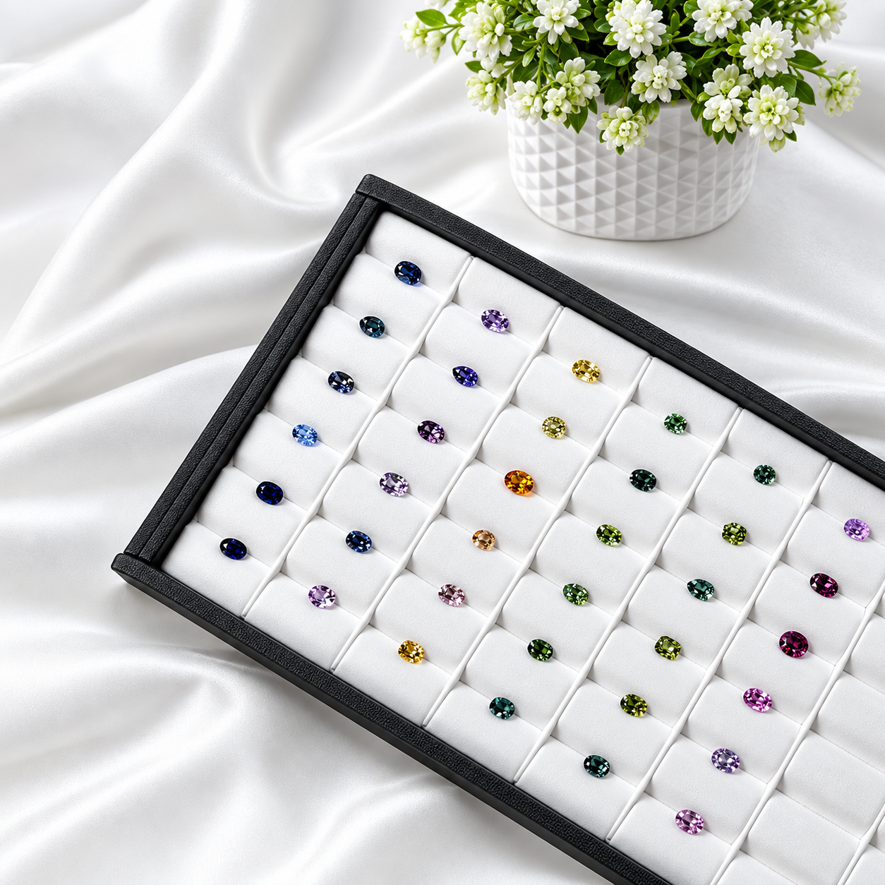
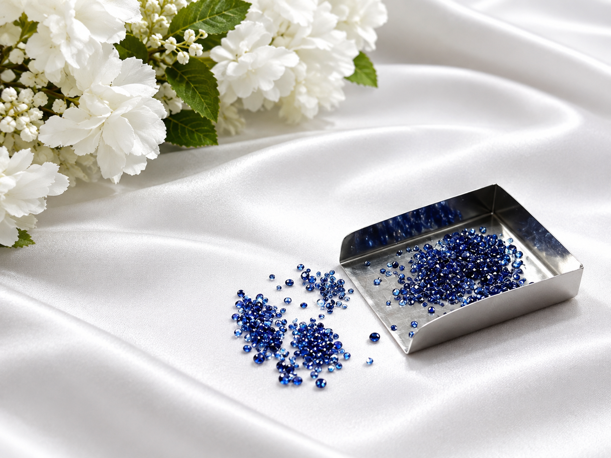
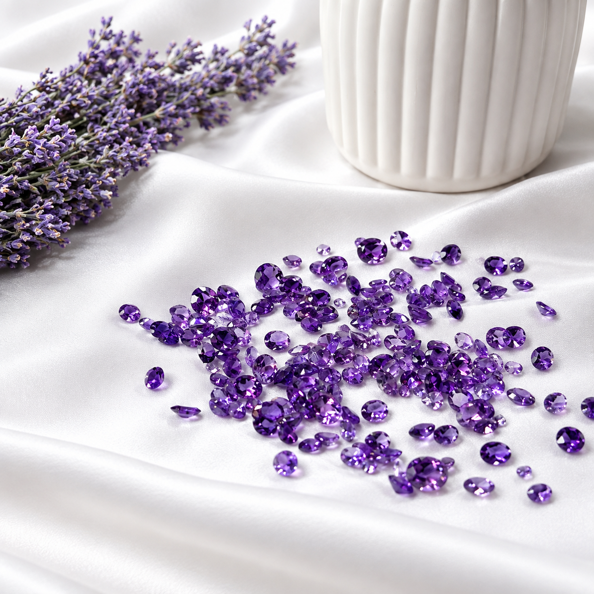
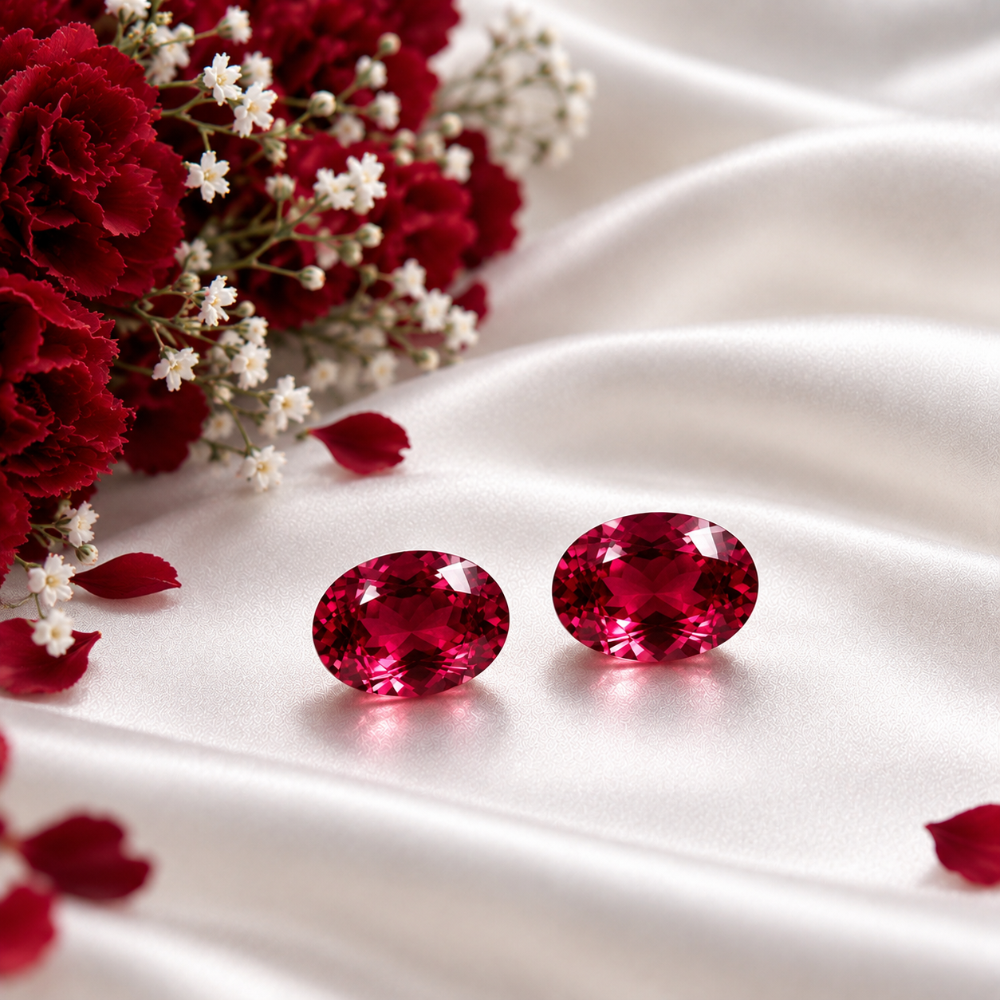
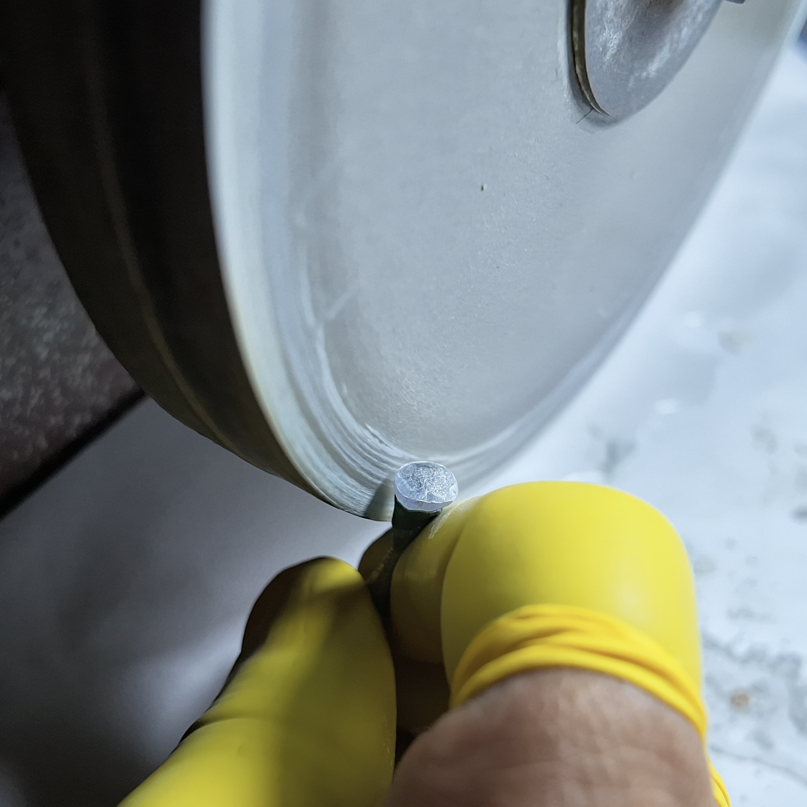

01
Natural Gemstones
Explore individually selected stones presented with clear information and visual detail.
Fine Elegance is a Sri Lankan gemstone business specializing in Ceylon sapphires, with a carefully selected range of precious and semi-precious gemstones available according to individual customer requirements.
With professional gemmological knowledge and a focus on quality, authenticity and personalized service, we connect customers with gemstones selected to suit their specific needs.

Sri Lanka is renowned worldwide for its exceptional sapphires and remarkable range of natural gemstone colors.
At Fine Elegance, our primary focus is sourcing and supplying Ceylon sapphires, including blue and other naturally occurring sapphire colors.
While sapphires are our specialty, Fine Elegance can also assist with sourcing other precious and semi-precious gemstones according to customer requirements.
View the collection →Choose a collection to explore its range and learn more about the gemstones and jewellery we present.

Natural sapphire selections in a range of colours and styles.

Selected precious gemstones beyond sapphire.

Standardized shapes and sizes for jewellery requirements.

Colourful selections across a broad range of gem varieties.

Matched stones for coordinated jewellery designs.

Gemstone jewellery and future custom pieces.
A refined presentation for gemstone lovers, designers, manufacturers, dealers, collectors and private buyers.
Explore individually selected stones presented with clear information and visual detail.
Professional cutting and polishing are central to the way we present each gem.
Tell us the gemstone you need and discuss colour, carat, cut, treatment and other requirements.
Our highlights area brings together gemstone presentation, lapidary work, jewellery and moments from our professional journey.
View highlights →
For current availability, specific requirements or a private conversation, contact Fine Elegance directly.
Searching for a particular colour, pair, calibrated stone, jewellery gem or another natural gemstone? Tell us what you are looking for.